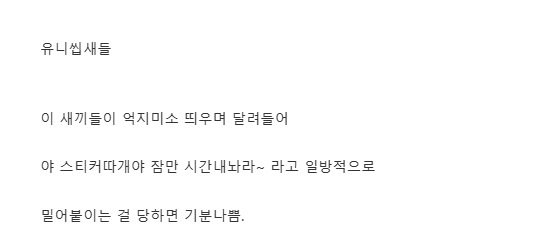

일단 난 본적없음 ....

일단 난 본적없음 ....
이젠 ngo사실상 반지팔찌팔이임
그전에도 뭐 애들 편지팔이였지
가입시키면 몇프로 먹음?
운영비 빼고 실재 후원은 몇프로가 됨? 10프로쯤은 실제후원 되나
우리회사는 월2~3만원(단체따라다름)짜리 기준으로 월 몇개 정해놓고 넘어가면 인센티브나오는
조건이였고 정확한 수치는 기억안나는데
건당 2~3만원수준이였던거같음
즉 목표 월20건이면 넘어가는 건당 인센
타업체는 기본급 아예x 건당5~7 이였던걸로기억
단체들 비슷하게 3개월기준 후원취소시
마이너스되는걸로 기억함
실제 후원이랑 에이전시랑은 상관없음
특정 단체나 기업에서 프로젝트 지정 후원
아닌이상 모금액은 전부 본사로들어가고
거기서 운용됨 이건 전세계 모든 ngo,npo단체가 동일함 내가 아동후원한다고해서
내돈이 그 아이한테 직결로 들어가는게아님
사회복지학에서도 특히나 3세계같은경우
직결 후원은 거의 금기시 되고있음
(가족들이 술,마약,도박 등으로 탕진)
만약 후원금이 100억이모였다
국내법기준 80%인가 국제법 70%인가 기준
무조건 프로젝트(후원) 비용으로 써야하고
나머지로 직원월급, 광고 등 운용비로 사용됨
즉 80억은 후원들어간다고 생각하면됨
이건 법테두리 안에 있는거라서
횡령이랑은 다르게 봐야하고
따지자면 만원 후원하면 최소 8000원 들어간다고 보면됨
정성추!
저긴 적어도 지로용지로 납부하라고 안하자너 지금은 모르겟는데 적십자사는 기부하면 지로용지로 우편와서 세금인줄 알고 동네 아르신들 꼬박꼬박내셧다 ㅇㅇ..
시발 누런 적십자 지로용지 볼떄마다 찢어버렸는데 ㅋㅋㅋㅋ
지방사람들은 잘 모르더라 저거땜에 울엄마랑 싸웠음 평소에 안하던 기부를 굳이 서울에서, 길 한복판에서 하겠다고 스티커 붙이겠다며 고집피우는걸 억지로 끌고갔었음
개패고싶음 진짜로
병원 진료보고 약받으러가는데 왔다갔다 두번 보는데 몸도 아파죽겠는데 존나 즐거운말투로 스티커좀 붙여주세요 하는데 개패고싶음
신천지 포교만큼 기분나쁜게 아니라 아동학대 스티커 붙이면서 연락처 달라는데 그 뒤에 신천지가 있어
설명듣고 30정도한다니까
월정액만받는다그래서
그럼안한다그랬음
"유니"자 들어가서 좋았던건 유니짜장과 유니텔 뿐이라는 말이 있었지
다이소 앞에 있다가 말거는거 까지는 괜찮은데
엄청 해맑게 뛰어와서 길을 막는 경우가 있음 그러면 마음이 조금 상함
한번 걸려서 신청했다가 나중에 해약? 했는데 설득전화 존나와서 개짜증났음 진짜
지나가면서 가끔씩 보이긴 하는데
솔직히 뭐하는건지 아직도 잘 모름
뭐 인기투표로 성과급 받아먹는건가 왜 자꾸 스티커를 쳐붙여달래
일단 그거로 말 거는거임
나도 호기심에 붙여봤는데 갑자기
왜 거기에 붙였어요? 하더라
니면상에붙일수는없잖아 라고해줬어야지
저건 그래도 걍 거절 의사 표하면 끝이던데 ㅋㅋ
길을 막는다거나 적극적으로 뭘 해달라고 하는 사람은 없었음
기분까진 안나쁘고 그냥 그러려니...별생각없이 지나감
어차피 이어폰끼고 무시하고 지나가서 기분나쁠것도없음
한다리 건너 아는 친구가 저런거 무슨 부장인가 팀장인가 라던데 한달에 8,9백 넘게 번다고 그러던데 진짜인지 모르겠음
저거 외주라고 하드만. 건당으로 수당주고
나는 저거 스티커 붙여달라길래 그럽시다 하고 하나 붙여주고 바로 갈길감.
10년전쯤 첫 취업을 저걸로했음
보통 NGO,NPO 에이전시라고 불림
좀 포괄적으로보면 광고대행사 라고 생각하면됨
당시에는 우리회사 제외하면 기본급없고 건당으로 받아가는 회사가 대부분이였음
한 6개월하고 답없어보여서 퇴사(퇴사후 이렇게 바뀌엇다고 들었음)
뭐 다단계나 이런건아니고
단순하게 반직영 보험,카드 직원이라고 생각하면 편함
저런업체가 우후죽순으로 생겼다가
코로나때 대부분 뒤진걸로알고있음
질문받음